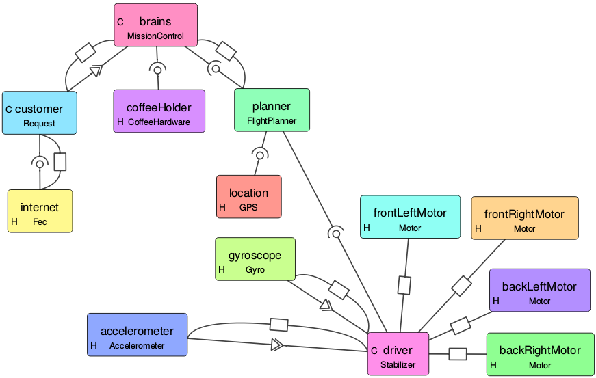

VisualCAmkES
VisualCAmkES, also known as Visualisation of CAmkES, is a tool that allows one to visually understand a CAmkES system, how it works and how the different components are connected together. This makes understanding easier and more intuitive than traversing CAmkES code. An example of a graph generated by this tool is shown below

Currently this program loads in a top-level camkes file and generates a graph from it. It also lets the user interact with the graph (zoom, pan and move nodes). The tool is a foundation for a CAmkES IDE. To create a CAmkES IDE, one must first be able to display a current CAmkES system and allow interaction. And that is what this project does. Since it was clear that this project should become an IDE in the future, the code has been written with that in mind.
The tool is written in python, for two reason. Python provides cross-platform compatibility, which doesn’t require heavy, insecure Java virtual machine. The tool uses the CAmkES Ast and Parser API, and since this was written in python, this tool was also written in python.
VisualCAmkES is currently on the CAmkESNext branch only
How to Install
Follow the instructions in CAmkESNext to obtain a copy of the CAmkES next repo. This tool should be found in [path/to/camkes-tool]/camkes/visualCAmkES.
Running the tool requires a few added dependencies: Graphviz and Qt. QT is a framework, which includes GUI, Network, Concurrency and other things. This install procedure assumes you have the rest of CAmkES working.
Installing Qt
For Debian/Ubuntu users, there are two ways to install this. The easy way is to apt-get the items. The “long” way is to build from source. For Mac (and presumably Windows, although this is untested for windows): the only way (other than macports/brew) is to build from source.
Qt is quite big, and the major of it is unnecessary. So I recommend to build from source for personal computers.
apt-get method
sudo apt-get install python-pyqt5
sudo apt-get install python-pyqt5.qtsvg
from source method
cd /some/temp/directory/like/Downloads
git clone git://code.qt.io/qt/qt5.git
cd qt5
git checkout 5.5
./init-repository --no-webkit --module-subset=qtbase,qtsvg
# Check where Qt will install - needed for PyQt5
./configure --help
# Have a look at where qt will be installed, for me it was installed in /usr/local/Qt-5.5.1
./configure -release -nomake examples -nomake tests -opensource -confirm-license # add "-qt-xcb" for linux
make -j4 # This takes a long time (1-3 hrs)
make install
Installing Graphviz
sudo apt-get install graphviz
sudo pip install graphviz
sudo pip install pydotplus
For macs, to install graphviz (first step above), visit this website: http://www.ryandesign.com/graphviz/ , download the latest development (or stable as long as greater than version 16), and install the dmg. Pip will work on the mac.
Installing other dependencies
sudo pip install ansi2html
How to use
This program is quite easy to use, yet quite powerful. To start the application, it would be:
python [path/to/camkes-tool/camkes]/visualCAmkES
Opening a File
To open a file, click File->Open. Then select a top-level camkes file. Your graph will load.
Manipulating the graph
In the right, you have a few buttons:

The button’s name should be self-explanatory. Autolayout will use graphviz to reposition the nodes into a “nice” format. In my experience, graphviz never gives a nice layout, but it does give a good starting point for you.
You can move the instances around by click & dragging each box. The connections will continually redraw as you move the box. There is a minimum distance to see the symbol for each connection.
Exporting and Saving
As you change the graph, the program automatically saves a .layout file, which contains the current position of each box. This means that you can close the python application, and when you reopen it, your latest layout will appear.
You can export an image, into either PNG or SVG.
-
Clicking Save Image or File->Export Image.
-
Choose either PNG or SVG from the combo-box (first input).
a. For PNG, resolutions is mandatory. b. For SVG, no input is mandatory.
- Click OK.
- Choose a place to save your file, and name your picture.
Import Paths
n some cases, users may have external import paths which is usually a parameter to the camkes parser. In order to visualise these camkes projects, the user can add import paths by doing the following:
-
Click Edit -> Add import paths
-
In the dialog box, type (or paste) your import paths. These need to be absolute paths. To add many paths, have spaces between your paths.
a. E.g “/home/someUser/camkes-next/projects/FileExtender /home/someUser/camkes-next/projects/common”
A keyboard shortcut is also implemented, Cmd + I or Cmd + I .
Key-mappings
The key-mappings are as follows:
| Task | Linux/Windows | Mac |
|---|---|---|
| Open | Ctrl + O | Cmd + O |
| Autolayout | Ctrl + L | Cmd + L |
| Export (Save) Image | Ctrl + E | Cmd + E |
| Zoom In | Ctrl + = | Cmd + = |
| Zoom Out | Ctrl + - | Cmd + - |
| Add Import Paths | Ctrl + I | Cmd + I |
How it works
High level overview

The above is quick UML class diagram. A few other classes isn’t shown like SaveOptionDialog - but these are helper classes.
The program is written in object-oriented style, Model-View-Controller (MVC) paradigm. If you don’t know what MVC is, its pretty much: Model represents the data, the backend; View represents the front-end, what the user sees; Controller keeps the Model and View in sync. Qt works on a Model-View paradigm, which is very similar - except the Controller and View are the same thing.
- GraphController is the QMainWindow - and starts of the program. It takes the chosen file from the user, gets an AST presentation from the ASTModel, and passes it on to the GraphWidget (the view).
- GraphWidget will traverse the AST, creating InstanceWidget for Instances and ConnectionWidget for Connections.
- GraphWidget is a QGraphicsView - containing QGraphicsScene. InstanceWidget and ConnectionWidget are QGraphicWidget and QGraphicItem respectively. QGraphicScene handles the placements of QGraphicItems, and has functions for scaling (i.e. zoom), panning, moving of nodes etc.
- The program primary works by events. Events are like mouse clicks, button presses etc.
Throughout my code, I use lazy instantiation. Most (if not all) global variables are declared as properties. Lazy instantiation is when properties are created only when they are first called. Lazy instantiation is done because subclasses might have different expectation of properties’s class.
The getters and settings may trigger other events such as updating the screen. Furthermore - it seems that when a property is passed down the different classes, say from GraphWidget to ConnectionWidget, the getter from GraphWidget is invoked. Hence, events can be triggered in GraphWidget when ConnectionWidget access the properties.
Layout
In order to save the layout information - the program saves a .visualCAmkES.layout file. It starts with a . because it is purposefully hidden (which won’t work on windows …). This file is a json file containing dictionaries. The key is the instance name, the value is another dictionary. The latter dictionary contains the position and whether it was hidden. Feel free to view the .layout file, but changing it can risk losing the layout.
Additional implementation details
- When connection widgets are deleted, ConnectionWidget.delete() must be called on the object. This is because connection widget is tracked by the from and to instance widgets, so it needs to delete itself from them.
- Context menu is a bit weirdly implemented. This is what I mean by weird: normally you would just create the menu and it all works - including closing of the menu. However this doesn’t work with QGraphicScenes. So the solution is to add the context menu to the scene, and manually close it if the mouse was clicked anywhere outside the context menu.
Traversing the code using PyCharm IDE is highly recommended.